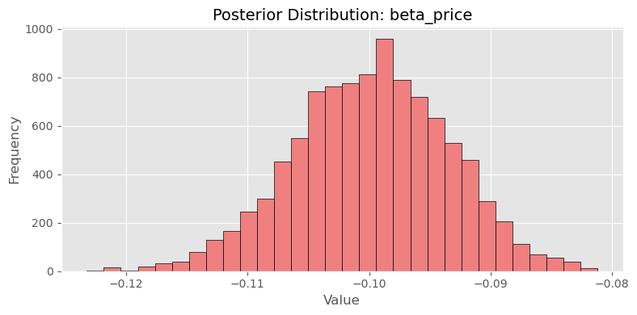
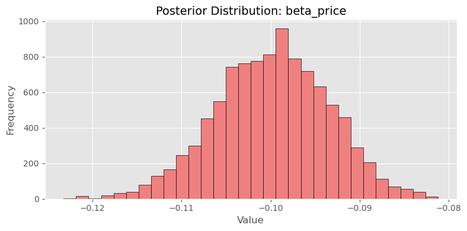

Multinomial Logit Model
This assignment expores two methods for estimating the MNL model: (1) via Maximum Likelihood, and (2) via a Bayesian approach using a Metropolis-Hastings MCMC algorithm.
1. Likelihood for the Multi-nomial Logit (MNL) Model
Suppose we have \(i=1,\ldots,n\) consumers who each select exactly one product \(j\) from a set of \(J\) products. The outcome variable is the identity of the product chosen \(y_i \in \{1, \ldots, J\}\) or equivalently a vector of \(J-1\) zeros and \(1\) one, where the \(1\) indicates the selected product. For example, if the third product was chosen out of 3 products, then either \(y=3\) or \(y=(0,0,1)\) depending on how we want to represent it. Suppose also that we have a vector of data on each product \(x_j\) (eg, brand, price, etc.).
We model the consumer’s decision as the selection of the product that provides the most utility, and we’ll specify the utility function as a linear function of the product characteristics:
\[ U_{ij} = x_j'\beta + \epsilon_{ij} \]
where \(\epsilon_{ij}\) is an i.i.d. extreme value error term.
The choice of the i.i.d. extreme value error term leads to a closed-form expression for the probability that consumer \(i\) chooses product \(j\):
\[ \mathbb{P}_i(j) = \frac{e^{x_j'\beta}}{\sum_{k=1}^Je^{x_k'\beta}} \]
For example, if there are 3 products, the probability that consumer \(i\) chooses product 3 is:
\[ \mathbb{P}_i(3) = \frac{e^{x_3'\beta}}{e^{x_1'\beta} + e^{x_2'\beta} + e^{x_3'\beta}} \]
A clever way to write the individual likelihood function for consumer \(i\) is the product of the \(J\) probabilities, each raised to the power of an indicator variable (\(\delta_{ij}\)) that indicates the chosen product:
\[ L_i(\beta) = \prod_{j=1}^J \mathbb{P}_i(j)^{\delta_{ij}} = \mathbb{P}_i(1)^{\delta_{i1}} \times \ldots \times \mathbb{P}_i(J)^{\delta_{iJ}}\]
Notice that if the consumer selected product \(j=3\), then \(\delta_{i3}=1\) while \(\delta_{i1}=\delta_{i2}=0\) and the likelihood is:
\[ L_i(\beta) = \mathbb{P}_i(1)^0 \times \mathbb{P}_i(2)^0 \times \mathbb{P}_i(3)^1 = \mathbb{P}_i(3) = \frac{e^{x_3'\beta}}{\sum_{k=1}^3e^{x_k'\beta}} \]
The joint likelihood (across all consumers) is the product of the \(n\) individual likelihoods:
\[ L_n(\beta) = \prod_{i=1}^n L_i(\beta) = \prod_{i=1}^n \prod_{j=1}^J \mathbb{P}_i(j)^{\delta_{ij}} \]
And the joint log-likelihood function is:
\[ \ell_n(\beta) = \sum_{i=1}^n \sum_{j=1}^J \delta_{ij} \log(\mathbb{P}_i(j)) \]
2. Simulate Conjoint Data
We will simulate data from a conjoint experiment about video content streaming services. We elect to simulate 100 respondents, each completing 10 choice tasks, where they choose from three alternatives per task. For simplicity, there is not a “no choice” option; each simulated respondent must select one of the 3 alternatives.
Each alternative is a hypothetical streaming offer consistent of three attributes: (1) brand is either Netflix, Amazon Prime, or Hulu; (2) ads can either be part of the experience, or it can be ad-free, and (3) price per month ranges from $4 to $32 in increments of $4.
The part-worths (ie, preference weights or beta parameters) for the attribute levels will be 1.0 for Netflix, 0.5 for Amazon Prime (with 0 for Hulu as the reference brand); -0.8 for included adverstisements (0 for ad-free); and -0.1*price so that utility to consumer \(i\) for hypothethical streaming service \(j\) is
\[ u_{ij} = (1 \times Netflix_j) + (0.5 \times Prime_j) + (-0.8*Ads_j) - 0.1\times Price_j + \varepsilon_{ij} \]
where the variables are binary indicators and \(\varepsilon\) is Type 1 Extreme Value (ie, Gumble) distributed.
The following code provides the simulation of the conjoint data.
import numpy as np
import pandas as pd
# Set random seed
np.random.seed(123)
# Define attributes
brands = ['N', 'P', 'H'] # Netflix, Prime, Hulu
ads = ['Yes', 'No']
prices = np.arange(8, 33, 4) # 8 to 32 by 4
# Generate all possible profiles
import itertools
profiles = pd.DataFrame(list(itertools.product(brands, ads, prices)), columns=['brand', 'ad', 'price'])
m = len(profiles)
# Part-worth utilities (true parameters)
b_util = {'N': 1.0, 'P': 0.5, 'H': 0.0}
a_util = {'Yes': -0.8, 'No': 0.0}
def p_util(p): return -0.1 * p
# Simulation parameters
n_peeps = 100
n_tasks = 10
n_alts = 3
# Function to simulate one respondent
def sim_one(id):
datlist = []
for t in range(1, n_tasks + 1):
sampled_profiles = profiles.sample(n=n_alts).copy()
sampled_profiles['resp'] = id
sampled_profiles['task'] = t
# Calculate deterministic utility
sampled_profiles['v'] = sampled_profiles.apply(
lambda row: b_util[row['brand']] + a_util[row['ad']] + p_util(row['price']),
axis=1
)
# Add Gumbel (Type I EV) noise
sampled_profiles['e'] = -np.log(-np.log(np.random.uniform(size=n_alts)))
sampled_profiles['u'] = sampled_profiles['v'] + sampled_profiles['e']
# Identify chosen alternative
sampled_profiles['choice'] = (sampled_profiles['u'] == sampled_profiles['u'].max()).astype(int)
datlist.append(sampled_profiles[['resp', 'task', 'brand', 'ad', 'price', 'choice']])
return pd.concat(datlist, ignore_index=True)
# Simulate data for all respondents
conjoint_data = pd.concat([sim_one(i) for i in range(1, n_peeps + 1)], ignore_index=True)3. Preparing the Data for Estimation
The “hard part” of the MNL likelihood function is organizing the data, as we need to keep track of 3 dimensions (consumer \(i\), covariate \(k\), and product \(j\)) instead of the typical 2 dimensions for cross-sectional regression models (consumer \(i\) and covariate \(k\)). The fact that each task for each respondent has the same number of alternatives (3) helps. In addition, we need to convert the categorical variables for brand and ads into binary variables.
Before estimating the model, I prepare the data so that the utility function can be computed as a linear combination of covariates. This requires converting the categorical variables into dummy variables.
Specifically, I treat Hulu as the reference level for brand, and ad-free (No) as the reference for the ad variable. I create binary indicators for:
- Netflix (\(\beta_{\text{netflix}}\)),
- Amazon Prime (\(\beta_{\text{prime}}\)),
- Ad presence (\(\beta_{\text{ads}}\)),
- And include price as a numeric variable (\(\beta_{\text{price}}\)).
Each row in the dataset corresponds to an alternative presented in a choice task.
# Convert categorical variables into dummy variables
df['brand'] = df['brand'].astype(str)
df['ad'] = df['ad'].astype(str)
# Create dummies for brand (Hulu as reference)
brand_dummies = pd.get_dummies(df['brand'], prefix='brand')
brand_dummies.drop(columns=['brand_H'], inplace=True)
# Convert ad to binary: Yes = 1, No = 0
df['ad_binary'] = df['ad'].map({'Yes': 1, 'No': 0})
# Combine into feature matrix
X = pd.concat([
df[['resp', 'task', 'choice', 'price']],
brand_dummies,
df['ad_binary']
], axis=1)
# Rename for clarity
X.rename(columns={
'brand_N': 'brand_netflix',
'brand_P': 'brand_prime'
}, inplace=True)
# Final structure
X = X[['resp', 'task', 'choice', 'brand_netflix', 'brand_prime', 'ad_binary', 'price']]Reshaped Variable Definitions
| Variable | Description |
|---|---|
resp |
Respondent ID |
task |
Choice task number (each respondent has 10 tasks) |
choice |
Binary indicator for whether this alternative was chosen (1 = chosen) |
brand_netflix |
1 if the alternative is Netflix, 0 otherwise (Hulu is the reference level) |
brand_prime |
1 if the alternative is Amazon Prime, 0 otherwise |
ad_binary |
1 if the alternative includes ads (“Yes”), 0 if ad-free (“No”) |
price |
Monthly subscription price of the alternative (in dollars) |
4. Estimation via Maximum Likelihood
The log-likelihood function is derived from the softmax probability of choosing an alternative:
\[ \ell(\beta) = \sum_{i,j} \delta_{ij} \log \left( \frac{e^{x_{ij}^\top \beta}}{\sum_{k \in C_i} e^{x_{ik}^\top \beta}} \right) \]
I implement this in Python by computing the utility for each alternative, applying the softmax transformation within each choice set, and summing the log-probabilities of the chosen alternatives.
To estimate the parameters of the multinomial logit model, I define a log-likelihood function that reflects the probability of observing the actual choices made by each respondent. The utility for each alternative is modeled as a linear combination of product attributes and estimated coefficients.
I use scipy.optimize.minimize() to maximize the log-likelihood (by minimizing the negative log-likelihood). The four parameters to be estimated are: - \(\beta_\text{netflix}\) for the Netflix brand dummy, - \(\beta_\text{prime}\) for the Amazon Prime dummy, - \(\beta_\text{ads}\) for ad presence, - \(\beta_\text{price}\) for price.
I also calculate standard errors based on the inverse Hessian matrix and construct 95% confidence intervals for each coefficient.
import numpy as np
from scipy.optimize import minimize
# Define input variables for estimation
X_vars = ['brand_netflix', 'brand_prime', 'ad_binary', 'price']
X_mat = X[X_vars].values
y = X['choice'].values
# Group each choice set (task within respondent) for probability denominator
group_ids = X.groupby(['resp', 'task']).ngroup().values
# Define the negative log-likelihood function
def neg_log_likelihood(beta):
utilities = X_mat @ beta
df_temp = pd.DataFrame({
'group': group_ids,
'utility': utilities,
'choice': y
})
df_temp['exp_u'] = np.exp(df_temp['utility'])
# Compute denominator of softmax per choice set
group_sums = df_temp.groupby('group')['exp_u'].transform('sum')
df_temp['log_prob'] = df_temp['utility'] - np.log(group_sums)
# Only keep log probabilities of chosen alternatives
chosen_log_probs = df_temp[df_temp['choice'] == 1]['log_prob']
return -np.sum(chosen_log_probs)
# Initial parameter guess
beta_init = np.zeros(X_mat.shape[1])
# Minimize the negative log-likelihood
result = minimize(neg_log_likelihood, beta_init, method='BFGS')
# Extract results
beta_hat = result.x
hessian_inv = result.hess_inv
standard_errors = np.sqrt(np.diag(hessian_inv))
# Construct 95% confidence intervals
z = 1.96
conf_int = np.vstack([beta_hat - z * standard_errors, beta_hat + z * standard_errors]).T
# Combine into a summary table
param_names = ['beta_netflix', 'beta_prime', 'beta_ads', 'beta_price']
mle_summary = pd.DataFrame({
'parameter': param_names,
'estimate': beta_hat,
'std_error': standard_errors,
'ci_lower': conf_int[:, 0],
'ci_upper': conf_int[:, 1]
})
mle_summary.round(4)The table below shows the estimated coefficients along with their standard errors and 95% confidence intervals based on the inverse Hessian from the MLE procedure.
| Parameter | Estimate | Std. Error | 95% CI |
|---|---|---|---|
beta_netflix |
0.9412 | 1.4043 | [-1.8112, 3.6936] |
beta_prime |
0.5016 | 1.6607 | [-2.7534, 3.7566] |
beta_ads |
-0.7320 | 0.3449 | [-1.4080, -0.0560] |
beta_price |
-0.0995 | 0.0084 | [-0.1160, -0.0830] |
5. Estimation via Bayesian Methods
I implement a Metropolis-Hastings MCMC sampler to approximate the posterior distribution of the four model parameters. I use a total of 11,000 iterations, discarding the first 1,000 as burn-in and retaining 10,000 posterior draws.
For the priors:
- I assume \(N(0, 5^2)\) for beta_netflix, beta_prime, and beta_ads,
- and \(N(0, 1^2)\) for beta_price.
The proposal distribution is a multivariate normal centered at the current state with a diagonal covariance matrix:
\(\Sigma = \text{diag}(0.05, 0.05, 0.05, 0.005)\)
Each parameter is updated jointly in the 4-dimensional space.
import numpy as np
import pandas as pd
import matplotlib.pyplot as plt
# Reuse log-likelihood function from earlier
def log_likelihood(beta):
utilities = X_mat @ beta
df_temp = pd.DataFrame({
'group': group_ids,
'utility': utilities,
'choice': y
})
df_temp['exp_u'] = np.exp(pd.to_numeric(df_temp['utility'], errors='coerce'))
group_sums = df_temp.groupby('group')['exp_u'].transform('sum')
df_temp['log_prob'] = df_temp['utility'] - np.log(group_sums)
return np.sum(df_temp[df_temp['choice'] == 1]['log_prob'])
# Log-prior function
def log_prior(beta):
return (
-0.5 * (beta[0]**2 + beta[1]**2 + beta[2]**2) / 25 # N(0, 5^2)
-0.5 * (beta[3]**2) # N(0, 1^2) for price
)
# Log-posterior
def log_posterior(beta):
return log_likelihood(beta) + log_prior(beta)
# Proposal step: N(0, diag(...))
proposal_sd = np.array([0.05, 0.05, 0.05, 0.005])
# MCMC settings
n_steps = 11000
beta_draws = np.zeros((n_steps, 4))
beta_current = np.zeros(4)
log_post_current = log_posterior(beta_current)
# Run Metropolis-Hastings
for t in range(1, n_steps):
beta_proposal = beta_current + np.random.normal(0, proposal_sd)
log_post_proposal = log_posterior(beta_proposal)
accept_ratio = np.exp(log_post_proposal - log_post_current)
if np.random.rand() < accept_ratio:
beta_current = beta_proposal
log_post_current = log_post_proposal
beta_draws[t, :] = beta_current
# Drop first 1000 draws (burn-in)
posterior_samples = beta_draws[1000:, :] 

param_names = ['beta_netflix', 'beta_prime', 'beta_ads', 'beta_price']
# Trace plot for beta_price
plt.figure(figsize=(10, 4))
plt.plot(posterior_samples[:, 3])
plt.title("Trace Plot: beta_price")
plt.xlabel("Iteration")
plt.ylabel("Value")
plt.grid(True)
plt.show()
# Histogram for beta_price
plt.hist(posterior_samples[:, 3], bins=30, edgecolor='k')
plt.title("Posterior Distribution: beta_price")
plt.xlabel("Value")
plt.ylabel("Frequency")
plt.grid(True)
plt.show()
# Summary statistics
posterior_df = pd.DataFrame(posterior_samples, columns=param_names)
posterior_summary = posterior_df.describe(percentiles=[0.025, 0.975]).T
posterior_summary['mean'] = posterior_df.mean()
posterior_summary['std'] = posterior_df.std()
posterior_summary['2.5%'] = posterior_df.quantile(0.025)
posterior_summary['97.5%'] = posterior_df.quantile(0.975)
posterior_summary[['mean', 'std', '2.5%', '97.5%']].round(4)Based on the retained 10,000 posterior draws from the Metropolis-Hastings algorithm, I summarize the posterior distributions for the four coefficients below. For each parameter, I report the posterior mean, standard deviation, and 95% credible interval.
These results can be compared directly to the MLE estimates from the previous section.
| Parameter | Posterior Mean | Std. Dev. | 95% CI |
|---|---|---|---|
beta_netflix |
0.9427 | 0.1096 | [0.7156, 1.1490] |
beta_prime |
0.5026 | 0.1060 | [0.2870, 0.7043] |
beta_ads |
-0.7316 | 0.0885 | [-0.9113, -0.5526] |
beta_price |
-0.0998 | 0.0064 | [-0.1127, -0.0879] |
6. Discussion
If I did not simulate the data and instead treated this as real-world survey responses, the parameter estimates would suggest meaningful behavioral patterns.
First, since \(\beta_{\text{Netflix}} > \beta_{\text{Prime}}\), I would interpret this to mean that, all else equal, users have a stronger preference for Netflix over Amazon Prime. Specifically, Netflix contributes more to overall utility than Prime, indicating that it is perceived as more desirable by the average respondent.
The negative coefficient on price (\(\beta_{\text{price}} < 0\)) is also intuitive: higher prices reduce utility, making a streaming offer less likely to be chosen. This aligns with standard consumer behavior — people prefer lower-cost options when all else is held constant.
Finally, the negative and statistically significant coefficient on ads indicates that consumers generally dislike advertisements and are more likely to choose ad-free plans.
Overall, these estimates would provide interpretable insights into user preferences if they came from actual choice experiment data.
To simulate data from a hierarchical or random-parameter logit model, I would need to introduce individual-level heterogeneity in the coefficients. Instead of assuming a single global \(\beta\) vector shared by all respondents, I would assume that each respondent i has their own vector of part-worths _i, drawn from a population-level distribution.
For example, I might assume:
\[ \beta_i \sim \mathcal{N}(\mu, \Sigma) \]
Then for each respondent:
- I would draw a unique _i from this multivariate normal prior,
- Compute their choice probabilities using _i,
- And simulate choices accordingly.
To estimate such a model, I would need to switch from maximum likelihood to hierarchical Bayesian methods, such as:
- Using Gibbs sampling or Hamiltonian Monte Carlo (HMC),
- Or leveraging probabilistic programming tools like Stan or PyMC.
This hierarchical model is more flexible than standard MNL, as it accounts for preference heterogeneity across users, which is often observed in real-world conjoint data.
In real-world conjoint studies, using a hierarchical model improves predictive accuracy and allows for more personalized insights at the individual respondent level.